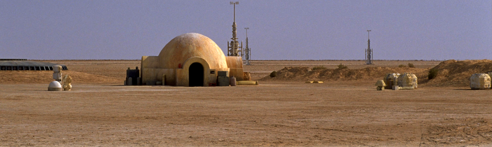
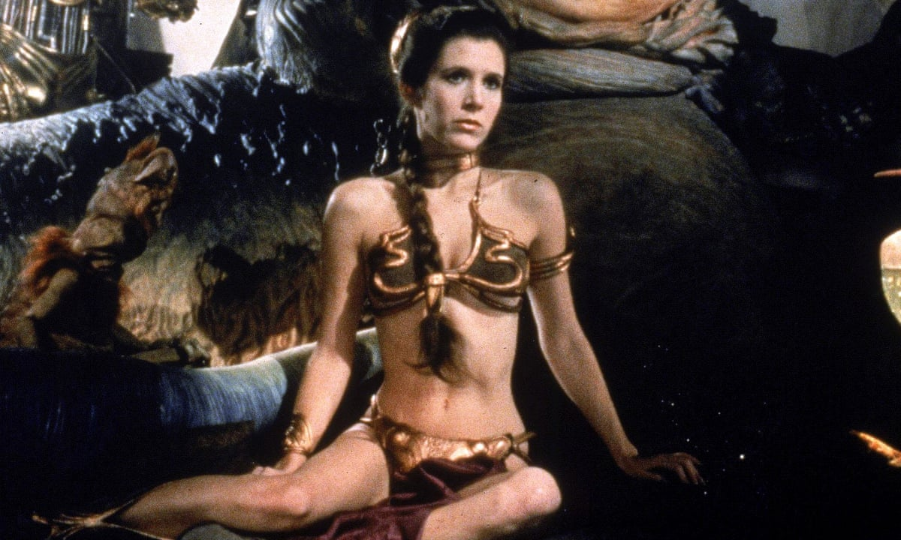

actividades
una granja de humedad era un área de tierra dedicada a la producción de agua a través de la extracción de
humedad del aire seco. Dependía de los vaporizadores, un tipo de dispositivo que podía recolectar el exceso de
humedad atmosférica. En mundos desérticos cálidos y áridos como Tatooine, el cultivo de humedad
era una
actividad vital.
La familia Lars, en la que fue adoptado
Luke Skywalker, era propietaria de una de esas granjas.

Las Podracing eran un deporte popular en las regiones menos desarrolladas de la galaxia y fue uno de los
deportes más peligrosos jamás inventados. Era común que algunos corredores perdieran la vida durante las
competiciones.
 Los Podracers eran pequeñas
naves repulsoras de un solo hombre, compuestas por una cápsula antigravedad
impulsada por uno o más pares de grandes motores de turbina.
Los Podracers eran pequeñas
naves repulsoras de un solo hombre, compuestas por una cápsula antigravedad
impulsada por uno o más pares de grandes motores de turbina.
Los motores no estaban conectados físicamente entre
sí, sino que estaban conectados por acoplamientos de potencia que consistían en descargas de plasma. Los motores
estaban conectados a las propias cápsulas por medio de largos cables Steelton. Los Podracers se
fabricaban a
medida y eran tan seguras como las fabricaran el mecánico y el piloto.
La esclavitud, aunque prohibida
por las leyes de la República, se practicaba fácil y descaradamente bajo los
soles gemelos. Toda una sección de Mos Espa fue destinada a ser un barrio de esclavos. En
Tatooine, al menos, la
institución de la esclavitud fue vista como un símbolo socioeconómico de riqueza y prestigio, lo que
resultó en
propietarios altamente protectores que se separaban a regañadientes de sus posesiones.
utilizado como capital en
transacciones comerciales, casi todas las operaciones de esclavos fueron supervisadas por los gánsteres Hutt,
que consideraban la esclavitud como una institución útil.
volver al inicio